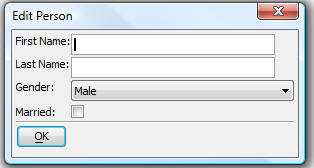

Classes
Classes are easy to define and use in your applications. When you open the Script Editor, you will notice that the toolbar has two new icons (4th and 5th icon in the image below) for creating new classes and new enumerations.
The section below is a short introduction to classes.
Introduction to Classes
The purpose of a class definition is to encapsulate data with the methods that operate on the data.
For our first simple example, let us assume that you want to create a class that represents a person, and includes name, gender and marital status. The class we will define has a method to validate, a method to edit the contents, and a method to generate a full name.
Here is our example code (you can paste this into a new Xbasic script - paste it into a script not a class):
NOTE: This sample will not work in V11 unless you add "option __A5V10CLASS__" to the top of the script.
define class personInformation
dim first_name as c
dim last_name as c
dim gender as c
dim married as l = .f.
function Validate as l()
if self.first_name = "" then
ui_msg_box("Error","Firstname is empty.")
Validate = .f.
exit function
end if
if self.last_name = "" then
ui_msg_box("Error","Lastname is empty.")
Validate = .f.
exit function
end if
if self.gender = "" then
ui_msg_box("Error","Gender is not specified.")
Validate = .f.
exit function
end if
Validate = .t.
end function
function Edit as v()
ui_dlg_box("Edit Person",<<%dlg%
First Name:|[.40self.first_name];
Last Name:|[.40self.last_name];
Gender:|[40self.gender^={Male,Female}];
Married:|(married);
{line=2};
<*&OK>;
%dlg%)
end function
function FullName as c()
if self.gender = "Male" then
FullName = "Mr " + first_name - " " + last_name
else if self.married then
FullName = "Mrs " + first_name - " " + last_name
else
FullName = "Ms " + first_name - " " + last_name
end if
end function
end class
Having defined the class, we can now use this class in the same script (paste this into the same script where you defined the class).
dim person as personInformation
person.gender = "Male"
person.Edit()
while .not. person.Validate()
person.Edit()
end while
ui_msg_box("Salutation","Hello "+person.FullName())
When you run the script that contains this class definition, you will see this dialog:

As you can see, once the class is dimmed, the properties and methods defined in the class are accessible.
Visibility - Making a Class Visible Outside the Script that Defines It
Class definitions are similar to variables in that they have a scope, which defaults to local, but can be optionally specified as session, global, or system.
You will notice that after you run the script, if you go to the Interactive window and type:
dim person as personInformation
You will get an error:
ERROR: Variable not found 'person' (extended type 'personInformation').
This is because after the script runs, the class is no longer visible, since it was local to the script (just as the variables that were DIMmed locally to the script are not visible).
If you change first line of the script from:
define class personInformation
to:
define class global personInformation
and run the script again, then go to the Interactive window, and type:
dim person as personInformation
you will see that it works.
You have created a 'personInformation' object, and all of the object's properties and methods work, just as they did in the original script.
The scope of a class can be 'local', 'shared', 'global' or 'system'.
- Global and shared classes exactly match the behavior of global variables and shared variables regarding visibility.
- 'System' is a level above 'global' in terms of visibility, since a system class is available even if you close the database that defines the class.
Creating a Class that Loads Automatically
To create a class that loads automatically, or nearly so, (rather than requiring your to first run the script that defines the class, as we have done in the prior examples), you create the class definition in the new Class Editor in V10 (rather than in a script, as we have done in the previous examples).
To open the Class Editor, open the Code Editor and click the New Class icon on the toolbar:
Even though a class can be defined in a script, the problem with doing this is that the script must be run before the class is available for use.
On the other hand, if you create your class in the Class Editor, the class will be will automatically be available when it is used, once a variable has been dim'd as the class.
To change our example so that the personInformation class is always available when needed, open the Class Editor, and paste the class definition from above into the editor.
(Note: Only paste the class definition, not the code that instantiates and uses the class!. The last line of code that you paste must be 'end class'.)
When you paste the code into the Class Editor, be sure that the scope of the Class is set to Global. The first line of the class definition should be:
define class global personInformation
Save the class with the same name as the class itself.
Now close the database and reopen it and then go to the Interactive window and type:
dim p as personInformation
Notice that it works! Alpha Five has automatically loaded the class into memory for you and you are able to use the class anywhere.
Static Methods - What They Are and How They are Used
A static class method is a method that does not require an 'instance' of the class to exist.
A good example of a static method is table.open(). The table.open() command creates an initialized table object that provides access to instance methods, like <table>.change_begin() to start changing a record, and <table>.close() - to close the table we opened.
You can create static methods in your Xbasic classes by using the static keyword in the function definition.
Taking our original example, we add a static method called 'createPerson' to the 'personInformation' class, which will let us create a person object and initialize some of its properties:
define class global personInformation
dim first_name as c
dim last_name as c
dim gender as c
dim married as l = .f.
function Validate as l()
if self.first_name = "" then
ui_msg_box("Error","Firstname is empty.")
Validate = .f.
exit function
end if
if self.last_name = "" then
ui_msg_box("Error","Lastname is empty.")
Validate = .f.
exit function
end if
if self.gender = "" then
ui_msg_box("Error","Gender is not specified.")
Validate = .f.
exit function
end if
Validate = .t.
end function
function Edit as v()
ui_dlg_box("Edit person",<<%dlg%
First Name:|[.40self.first_name];
Last Name:|[.40self.last_name];
Gender:|[40self.gender^={Male,Female}];
Married:|(married);
{line=2};
<*&OK>;
%dlg%)
end function
function FullName as c()
if self.gender = "Male" then
FullName = "Mr " + first_name - " " + last_name
else if self.married then
FullName = "Mrs " + first_name - " " + last_name
else
FullName = "Ms " + first_name - " " + last_name
end if
end function
function static CreatePerson as p(fname as c,lname as c,gender as c)
dim person as personInformation
person.first_name = fname
person.last_name = lname
person.gender = gender
CreatePerson = person
end function
end class
Now in the interactive window, we can create a new person object by using the 'personInformation.CreatePerson()' method, for example:
pd = personInformation.CreatePerson("John","Public","Male")
? pd.first_name
= "John"
pd.edit()
Using the static method of the personInformation class, we have created a new instance of that class and initialized some of its properties. Alternatively, we could have done this (which does not use the static method of the Class):
dim pd as personInformation
pd.first_name = "John"
pd.last_name = "Public"
pd.gender = "Male"
pd.edit()
Note that in a program, a static method defined in a class file can only be used once a variable has been dim'd as the class somewhere. The variable need not be in scope when the static method is invoked.
Inheritance of Classes
Inheritance is the concept of taking one class definition, and extending it to add new data and methods. If we take our example class of personInformation, an example of extending personInformation might be to create an 'employeeInformation' class which is built on the personInformation class, but adds a 'salary' property.
Here is an example that extends the personInformation class to create a new class called employeeInformation:
define class global employeeInformation inherits personInformation
dim salary as n
function Edit as v()
ui_dlg_box("Edit employee",<<%dlg%
First Name:|[.40self.first_name];
Last Name:|[.40self.last_name];
Gender:|[40self.gender^={Male,Female}];
Married:|(married);
Salary:|[40self.salary];
{line=2};
<*&OK>;
%dlg%)
end function
function [static] CreateEmployee as p(fname as c,lname as c,gender as c,salary as n)
dim employee as employeeInformation
employee.first_name = fname
employee.last_name = lname
employee.gender = gender
employee.salary = salary
CreateEmployee = employee
end function
end class
In the interactive window, we can now use employeeInformation - note that the FullName() method that personInformation defines is available to the employeeInformation class.
dim e as employeeInformation
e = employeeInformation.CreateEmployee("Sam","Smith","Male",70000)
? e.FullName()
= "Mr Sam Smith"
? e.salary
= 70000